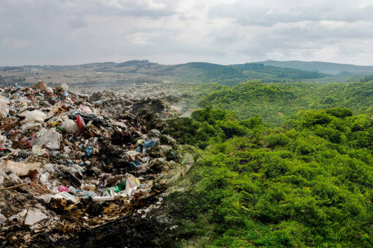
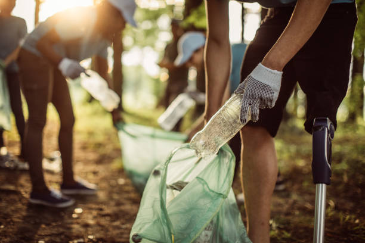
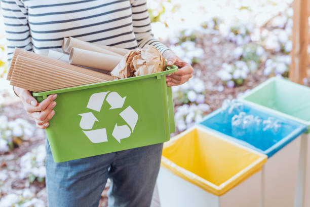

Mission and Goals

Why SDG 12 Matters Today
A Planet Under Pressure
Global consumption is at an all-time high and the consequences are becoming impossible to ignore. We are producing, using, and discarding more than the planet can sustainably handle — from mountains of electronic waste to fast fashion ending up in landfill within weeks of purchase. Natural resources are being depleted faster than they can recover, and the waste generated by modern lifestyles is polluting oceans, soil, and air. SDG 12 pushes for a fundamental shift in how the world produces and uses resources, because without that shift, the environmental and economic damage will become irreversible within our lifetime.
Actions you can take:
- Reduce single-use plastic in daily life
- Choose repairable products over disposable ones
- Research a brand's sustainability record before buying

Why It's Relevant to Students & Local Communities
It Starts With Us
Students are among the most active consumers on the planet — constantly buying food, fashion, technology, and everyday essentials, often with little thought about where those things come from or where they end up. Local communities feel the direct effects of overconsumption through overflowing bins, polluted green spaces, and rising costs of living. The good news is that change at the student and community level is both achievable and powerful. Small, consistent choices made by thousands of students on a single campus can drive real demand for more sustainable products and practices, signalling to businesses and institutions that this generation expects better.
Outcomes:
- Cleaner local environments with less landfill waste
- Lower household costs through mindful spending
- Stronger community culture of sharing and reuse

Who It's For
Everyone Has a Role
SDG 12 is not a goal reserved for governments negotiating policy or corporations overhauling supply chains — it belongs to everyone. Shoppers, students, landlords, local businesses, universities, and public institutions are all part of the same system of production and consumption, and all have meaningful power to change it. Whether you are deciding what to buy, how to dispose of something, or how to run an organisation, your decisions ripple outward. The more people understand that sustainability is not a lifestyle reserved for a privileged few but a practical necessity for all, the faster meaningful progress becomes possible.
Actions communities can do:
- Universities can adopt zero-waste campus policies
- Students can organise swap events for clothes and textbooks
- Local shops can switch to sustainable packaging